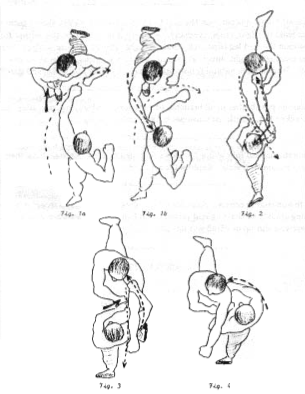

El karate y las técnicas de fluir como el agua
El karate es un arte marcial que se centra en la defensa personal y el desarrollo físico y mental. Una de las filosofías clave del karate es la idea de fluir como el agua, lo que significa adaptarse a las circunstancias y responder de manera flexible a los desafíos, esta filosofia de combate fue popularizada por el maestro Bruce Lee, quien dijo: "Be water, my friend" (Sé agua, amigo mío). En el contexto del karate, esto implica moverse con gracia y eficiencia, utilizando la fuerza del oponente en su contra y manteniendo la calma bajo presión.
Muchos karatekas especialmente tradicionales, practican bajo estructuras rígidas y formas predefinidas, se debe golpear de cierta manera, se deben hacer coreografias, y se debe mantener una postura específica. etc. esto a la larga, puede limitar la capacidad de un karateka para adaptarse a situaciones imprevistas y responder de manera efectiva a los ataques del oponente.
Para mantener esta esencia, es importante equilibrar la práctica tradicional con la adaptabilidad necesaria para enfrentar situaciones reales. no tener un estilo de combate rígido, sino más bien un estilo que se adapte a las circunstancias y al oponente, es fundamental para el desarrollo de un karateka completo. el error que se comete es tener una forma rigida de combate, si un peleador tiene una caracteristca muy sobre saliente el error que puede cometer es enfocarse demasiado en esa caracteristica, como dijo Bruce Lee, "este dedo te esta mosntrando el camino hacia la luna, si tu atencion se enfocara en el dedo, habrias pertido toda la gloria celestial", por ejemplo si un peleador es muy fuerte, puede que se enfoque en golpear con fuerza y no en esquivar o moverse con agilidad, lo que puede ser un error fatal en una pelea real.
Si un alguiem quiere alcanzar este concepto tiene que entrenar el cuerpo pero sobre todo la "Mente", de nada sirve tener un cuerpo rapido y fuerte si no se tiene la capacidad de adaptarse a las circunstancias y responder de manera efectiva a los ataques del oponente. el entrenamiento mental puede incluir la meditación, la visualización y la práctica de técnicas de respiración para mantener la calma bajo presión.
La interceptacion
Interceptar un ataque es una técnica avanzada que requiere una gran habilidad y experiencia. La interceptación implica anticipar el movimiento del oponente y colocar el cuerpo en la trayectoria del ataque para neutralizarlo. Esto requiere una comprensión profunda de la mecánica del movimiento y la capacidad de leer las intenciones del oponente. La interceptación puede ser una herramienta poderosa en el arsenal de un karateka, pero también requiere un alto nivel de control y precisión para ejecutarla correctamente. para poder interceptar un ataque, se debe golpear al oponente en el momento adecuado, por eso se deben realizar ataques directos y rápidos, para que el oponente no tenga tiempo de reaccionar y pueda ser interceptado. esto significa cero florituras, cero movimientos innecesarios, cero movimientos que no sean directos al objetivo, y sobre todo, cero movimientos que no sean rapidos y precisos.

Velocidad
La velocidad es un factor crucial en el karate, ya que permite a los practicantes ejecutar técnicas de manera rápida y eficiente. La velocidad no solo se refiere a la rapidez de los movimientos físicos, sino también a la rapidez mental para tomar decisiones y reaccionar ante las acciones del oponente. Un karateka rápido puede sorprender a su adversario y aprovechar cualquier oportunidad que se presente durante un combate. la velocidad se puede mejorar a través de ejercicios específicos, como el entrenamiento de reflejos, la práctica de combinaciones rápidas y la mejora de la agilidad. Además, mantener una buena condición física y fortalecer los músculos también contribuye a aumentar la velocidad en el karate.
Mente
La mente es un componente esencial en la práctica del karate, ya que influye en la concentración, la toma de decisiones y la capacidad de adaptarse a diferentes situaciones. Un karateka con una mente fuerte puede mantener la calma bajo presión, analizar las acciones del oponente y responder de manera efectiva. La meditación, la visualización y la práctica de técnicas de respiración son herramientas útiles para desarrollar la fortaleza mental. Esta es la filosofia la mente sin mente
Conclusión
En conclusión, el karate es un arte marcial que combina la fuerza física con la agilidad mental. La filosofía de fluir como el agua, la interceptación de ataques, la velocidad y el desarrollo de la mente son aspectos fundamentales para convertirse en un karateka completo. Al equilibrar la práctica tradicional con la adaptabilidad y la fortaleza mental, los practicantes pueden enfrentar desafíos de manera efectiva y alcanzar un mayor nivel de habilidad en el karate. como dijo Bruce Lee, "No pienses, siente se como el agua, y la mejor defensa es la interceptación"